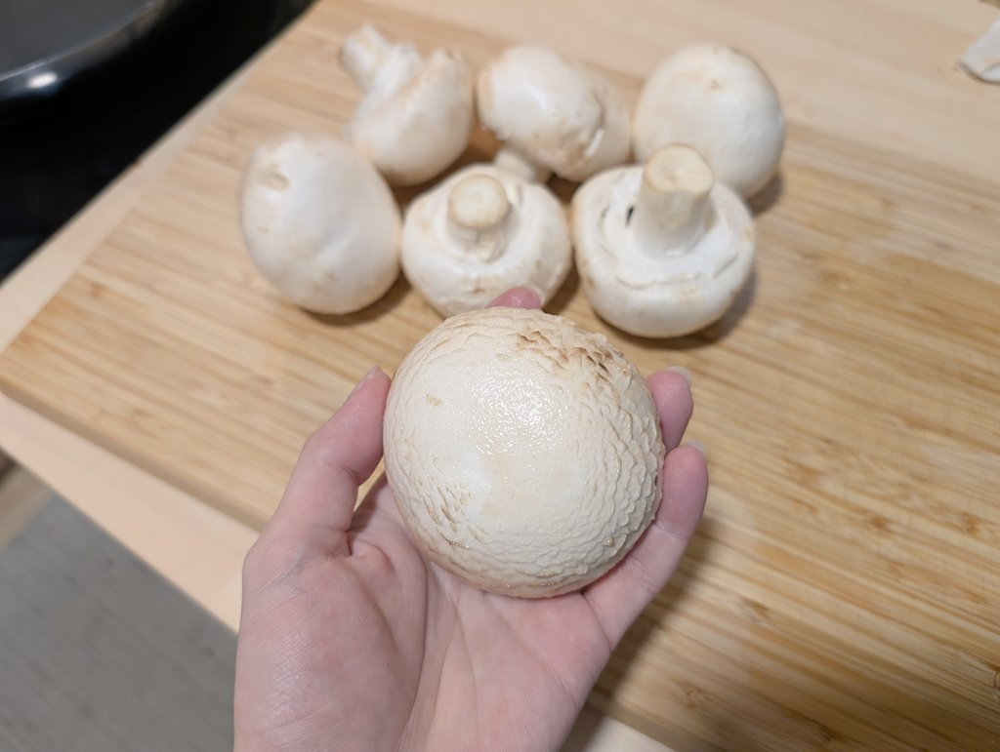
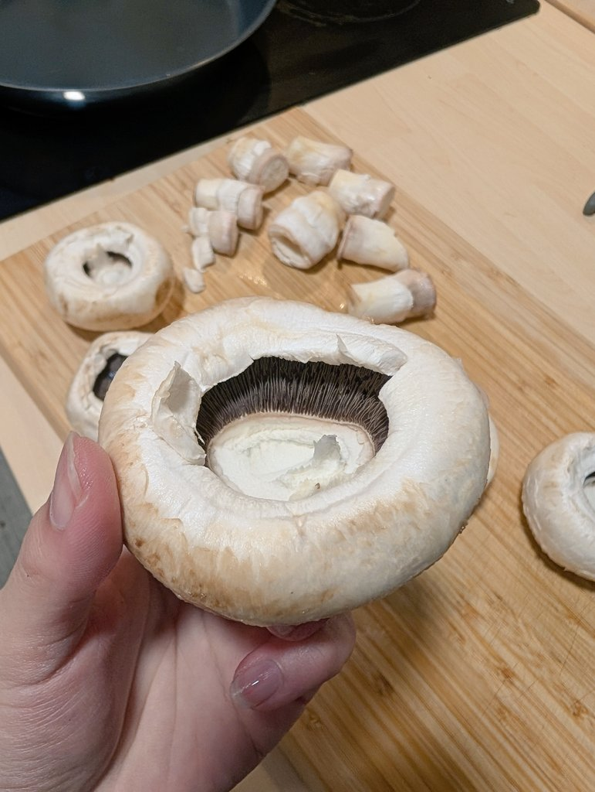

鈴白千夏
@Suzushirochika
@mario_2333 真的好吃这个😋


🍭Mario🐈
@mario_2333
今天整点花里胡哨的烤口蘑～
还是这个季节好，5~8cm的大个口蘑和普通口蘑差不多一样便宜，咱这盒是偏小的因为最大的一盒只有3个www
轻轻塞进去点炒过的培根碎和蘑菇柄，撒点芝士再烤，不太实汁水就不会流出来，剩下的也还可以吃，这么大的蘑菇咬起来很爽诶！ https://t.co/HZpiVIG2XM